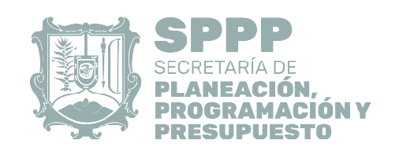

<ion-header>
  <ion-navbar>
    <ion-title>
      <ion-icon name="checkbox"> Asistencia - SPPP</ion-icon> 
    </ion-title>
  </ion-navbar>
</ion-header>
<ion-content padding>
  
  <button ion-button full (click)="scanQR()" color="danger"><ion-icon ios="ios-clock" md="md-clock"> Registrar Asistencia</ion-icon></button>
  <!--h3>Personas asistidas</h3>
  <p> contador ++</p-->
</ion-content>

